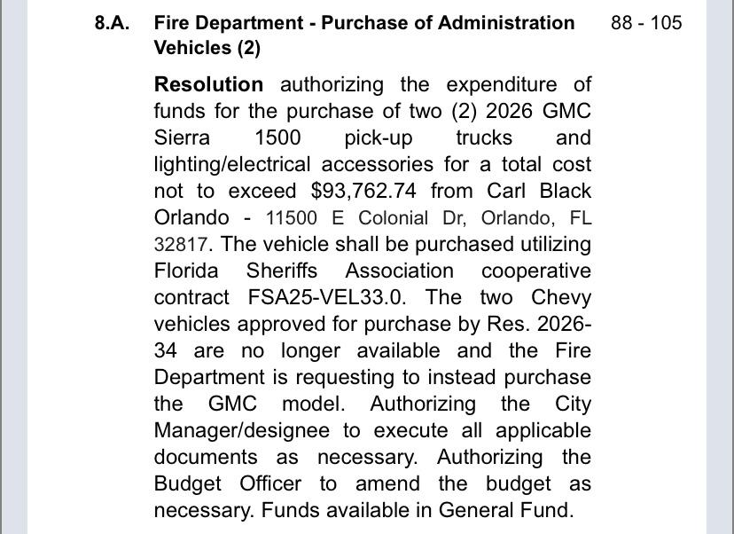
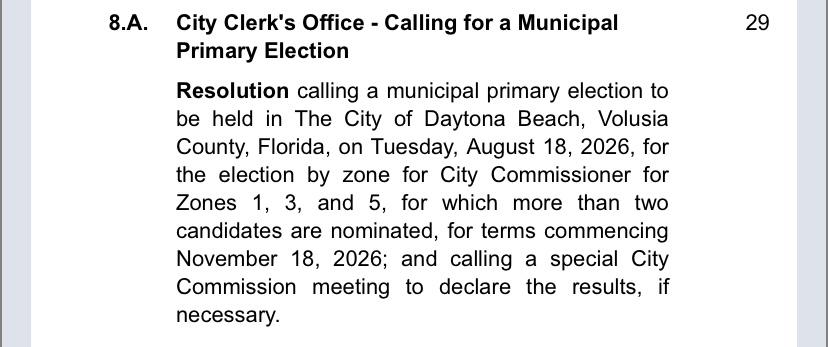
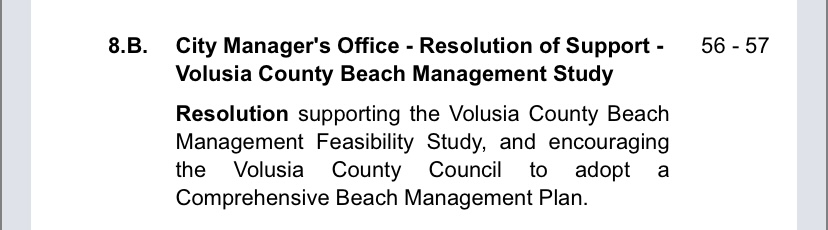

Link to agenda: City Commission Agenda 02/18
Review each 02/18 agenda image and choose whether you would approve or deny.

02/18 Agenda PDF
Link to agenda: City Commission Agenda 03/04
Review each 03/04 agenda image and choose whether you would approve or deny.

03/04 Agenda PDF
Link to agenda: City Commission Agenda 03/18
Review each 03/18 agenda image and choose whether you would approve or deny.
